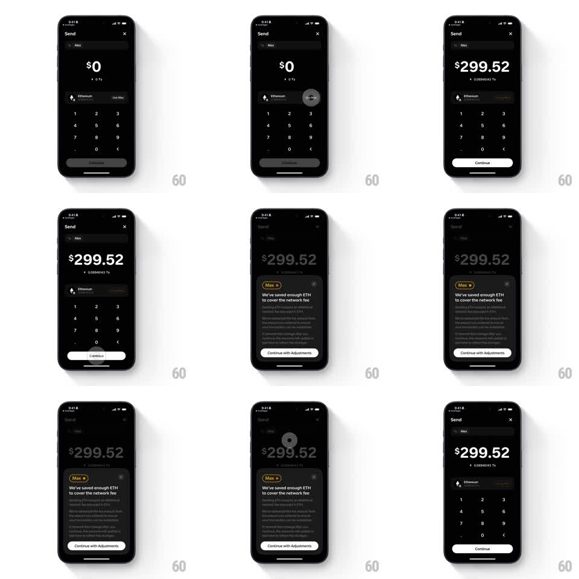

Media
Frame-by-frame

Rebuild this interaction 1:1: Family's send max-info morph - on the dark Send screen (To: Alex, amount "$299.52", numpad), tapping the "Max" button morphs it into an info sheet ("We've saved enough ETH to cover the network fee", "Continue with Adjustments"); closing collapses the sheet back into the Max button.

Rebuild this interaction 1:1: Family's send max-info morph - on the dark Send screen (To: Alex, amount "$299.52", numpad), tapping the "Max" button morphs it into an info sheet ("We've saved enough ETH to cover the network fee", "Continue with Adjustments"); closing collapses the sheet back into the Max button.
## Integration
Integration: stack-agnostic spec - springs given as stiffness/damping, timed motions as duration + curve; map every value to your framework and animation library of choice.
## Scene
Dark Send screen: "To: Alex" row, big amount "$0" becoming "$299.52" ("0.08946143 ETH"), Ethereum row with "Use Max", numpad, "Continue" (disabled until amount). A small "Max" pill with a sparkle sits near the amount. The sheet: "Max" tag header, "We've saved enough ETH to cover the network fee", explainer paragraphs, white "Continue with Adjustments" pill, X close.
## Motion spec
Pattern: pill-to-sheet morph with reversible collapse.
- Tap Max: the amount fills in ($299.52 with a digit roll, 250ms) and the Max pill expands downward into the sheet (bounds morph, spring ~300/18), its sparkle tag persisting as the sheet's header chip.
- The explainer paragraphs stagger in (60ms apart) as the screen dims behind (scrim 40%).
- "Continue with Adjustments" slides up last (200ms); tapping it collapses the sheet (reverse morph) and commits the adjusted amount.
- X or scrim tap: the sheet morphs back into the Max pill (spring ~320/20), the amount staying as set.
## Calibration
- The Max pill is small - the morph is a bloom, fast and contained.
- The sparkle on the Max tag is the continuity marker through the morph.
## Reduced motion
The sheet fades/slides up 40pt (200ms); no bounds morph.
## Don't miss
- The numpad hides while the sheet is open and returns after.
- The sheet's title keeps the exact "Max" chip styling from the button.